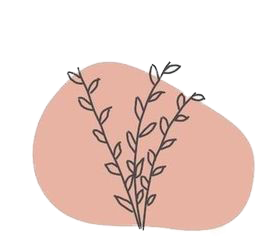
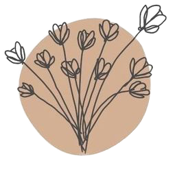
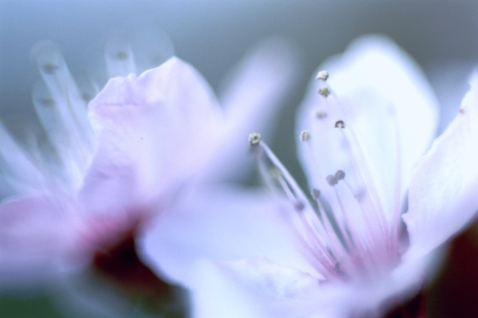
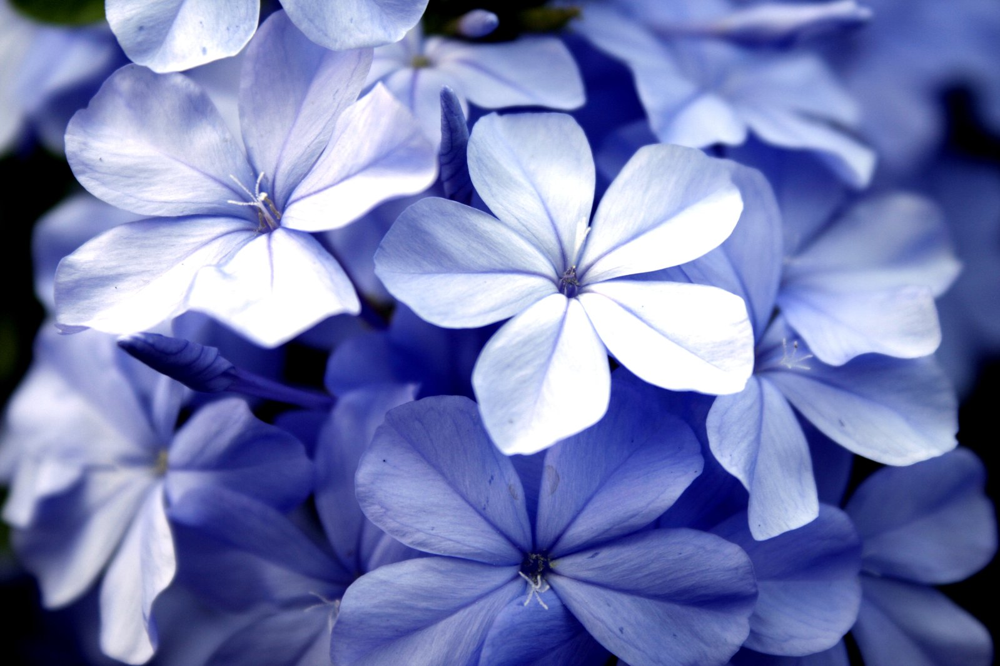

“There are always flowers for those who want to see them.”
Henri Matisse
-

Flowers in literature
The origins of flower names, flower mythology and even the distinctive characteristics of flower species best describe the extensive symbolism and meaning behind flowers.
-

Flowers in poetry
Flowers are a perennial theme of poetry. Indeed, the word for a book of poems, ‘anthology’, even comes from the Greek for ‘flower’.
-

Flowers in atr
Some scientists argue that people developed a liking for flowers because they signal proximity to fruit. Others, like the physicist David Deutsch, suggest that blossoms contain a type of objective beauty, attracting humans with their harmonious colors, soft curves, and symmetrical forms.
-
Sunflowers
Sunflowers are usually tall annual or perennial plants that in some species can grow to a height of 300 centimetres (120 inches) or more. Each "flower" is actually a disc made up of tiny flowers, to form a larger false flower to better attract pollinators. The plants bear one or more wide, terminal capitula (flower heads made up of many tiny flowers), with bright yellow ray florets (mini flowers inside a flower head) at the outside and yellow or maroon (also known as a brown/red) disc florets inside.
-

Apple blossom
The apple blossom is a typical angiosperm flower, with petals surrounding multiple pollen-producing structures called stamens, the male reproductive organs of the flower, which are crowned with sticky pollen-collecting stigma.
-

Violet flowers
Viola is a genus of flowering plants in the violet family Violaceae. It is the largest genus in the family, containing between 525 and 600 species. Most species are found in the temperate Northern Hemisphere; however, some are also found in widely divergent areas such as Hawaii, Australasia, and the Andes.